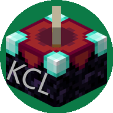

三个版本共用同一官网与后台。Windows 主力用 KCL2；偏好社区渠道用 KCL CE；安卓手机用 KCL。全部支持微软正版登录与 BMCLAPI 加速下载。
基于 Plain Craft Launcher 2 的单文件启动器。解压即用，首次运行在同目录生成 KCL 与 .minecraft 两个文件夹。
基于 PCL Community 官方社区版（现代 C# / .NET）改造，界面与 KCL2 一致，走独立更新通道与公告。

基于 FCL（Fold Craft Launcher）再发行，在手机上运行 Minecraft Java 版，支持模组加载与全版本。
仅当双击 KCL2.exe 提示缺少 .NET Framework 时才需要。运行后自动下载安装依赖，完成后会提示并退出。KCL CE 与手机版无需此补丁。